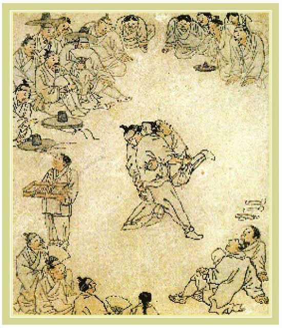

 두 무리의 구경꾼들을 화면 상하단으로 둥글게 배치하여 가운데의 공간을 긴장 시킨 다음 서로 맞붙어 힘을 겨루는 두 사람의 씨름꾼을 그려 넣어 핵심을 구성하였다. 왼편에 서있는 엿장수도 구경꾼들의 관심밖에 있으면서 전체적인 구도에 긴요한 역할을 하고 있으며 벗어놓은 신발 또한 오른쪽으로 터진 여백을 좁히는 구실을 하고 있다. 이처럼 빈틈없이 짜여진 구성력을 통하여 김홍도는 그리고자 하는 광경의 정황을 훨씬 실감나게 전하였던 것이다.
혜원 신윤복의 그림 중에 가장 널리 알려진 유명한 작품으로 단오절에 창포물에 머리 감고 그네를 뛰는 등의 세시풍속을 잘 보여주고 있다. 시대적으로 노골적이며, 대담한 표현을 감히 혜원이 구사했다는 사실이 선구적인 작가의식을 지닌 훌륭한 예술가임을 느낄 수 있다.